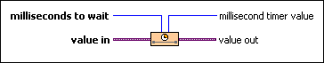
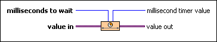

Stall Data Flow VI
Owning Palette: Timing VIs and Functions
Requires: Base Development System
Delays the data flow of the wire for a specified period of time.

 Add to the block diagram Add to the block diagram |
 Find on the palette Find on the palette |
Owning Palette: Timing VIs and Functions
Requires: Base Development System
Delays the data flow of the wire for a specified period of time.

| Add to the block diagram |
Find on the palette |
Refer to the Malleable VIs Basics.lvproj in the labview\examples\Malleable VIs\Basics directory for an example of using the Stall Data Flow VI.
 Open example Find related examples
Open example Find related examples